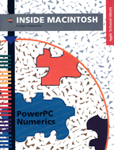

Legacy Document
Important: The information in this document is obsolete and should not be used for new development.
Important: The information in this document is obsolete and should not be used for new development.


PowerPC Numerics
Inside Macintosh: PowerPC Numerics describes the numerics environment for Macintosh with PowerPC computers. PowerPC Numerics is an environment in which floating-point operations are performed quickly and as accurately as possible. This book contains information you need to know to write floating-point applications for Macintosh with PowerPC computers. By reading this book, you'll learn about
To use this book, you need to be familiar with the PowerPC run-time architecture as described in the book Inside Macintosh: PowerPC System Software. It also helps if you know how to write programs in the C programming language.
- IEEE Standard 754
- the FPCE technical report
- the differences between PowerPC Numerics and the Standard Apple Numerics Environment
- the functions and macros provided in the PowerPC Numerics library
- the PowerPC floating-point architecture
- the structure of PowerPC floating-point data formats
- the floating-point exceptions and how to use them when programming
- porting floating-point applications to Macintosh with PowerPC computers
Availability: Click below to obtain Inside Macintosh: PowerPC Numerics in any of the following formats.

Book Contents
- Figures, Tables, and Listings
- Preface - About This Book
- Part 1 - The PowerPC Numerics Environment
- Chapter 1 - IEEE Standard Arithmetic
- Chapter 2 - Floating-Point Data Formats
- Chapter 3 - Expression Evaluation
- Chapter 4 - Environmental Controls
- Chapter 5 - Conversions
- Chapter 6 - Numeric Operations and Functions
- Part 2 - The PowerPC Numerics C Implementation
- Chapter 7 - Numeric Data Types in C
- Chapter 8 - Environmental Control Functions
- Chapter 9 - Conversion Functions
- Chapter 10 - Transcendental Functions
- Part 3 - Numerics in PowerPC Assembly Language
- Chapter 11 - Introduction to Assembly-Language Numerics
- Chapter 12 - Assembly-Language Environmental Controls
- Chapter 13 - Assembly-Language Numeric Conversions
- Chapter 14 - Assembly-Language Numeric Operations
- Appendixes
- Appendix A - SANE Versus PowerPC Numerics
- Appendix B - Porting Programs to PowerPC Numerics
- Appendix C - MathLib Header Files
- Appendix D - FPCE Recommendations for Compilers
- Appendix E - MathLib Reference
- Appendix F - PowerPC Assembly-Language Numerics Reference
Glossary Bibliography